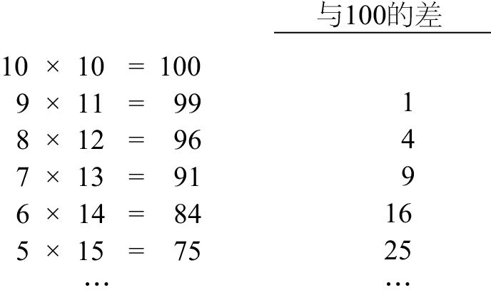
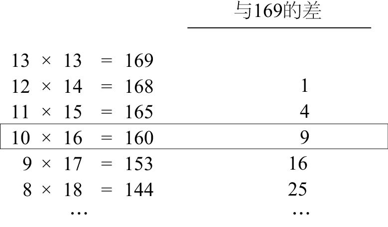
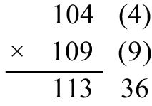
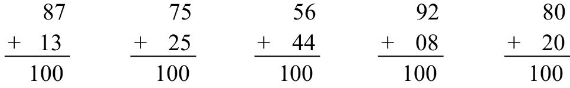
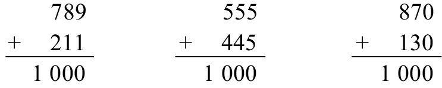
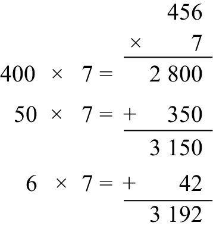
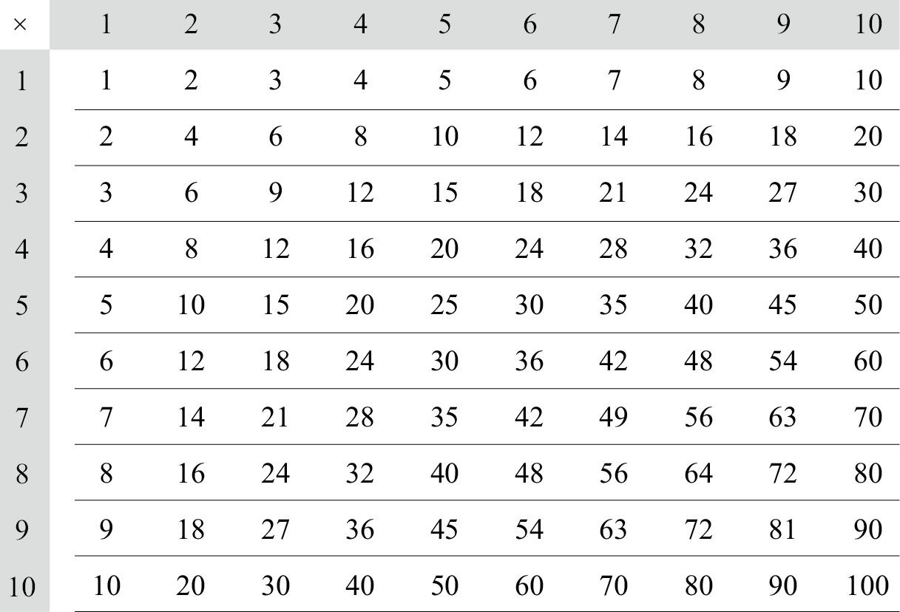
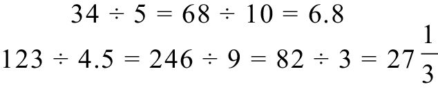
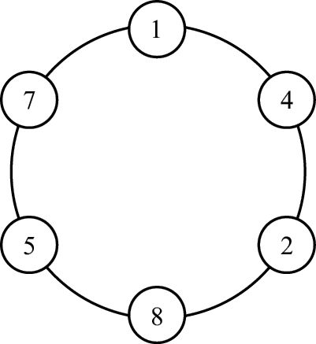

看着数字的这些规律，有人禁不住会问：“这些规律确实很有意思，但是它们有什么用处呢？”对于这样的问题，任何艺术家都会嗤之以鼻，因为在他们眼中，这些优美的规律本身就是一种美！大多数数学家也会有同样的反应。而且，对这些规律的理解越深入，就越能体会其中蕴藏的美。有的规律不仅优美，还可以用来解决某些实际问题。
下面以一个我年轻时发现的简单规律为例。这个发现让我非常开心，尽管我并不是发现这个规律的第一人。当时，我正在求解和为20的两个数字（例如10和10，9和11）的最大乘积。我发现，当这两个数字都是10时，它们的乘积可能是最大的。结果，下图揭示的规律证实了我的猜想。

这个规律没有任何错误。随着两个数字之间的差不断增大，它们的乘积却越来越小。这些乘积与100的差是多少呢？答案是1、4、9、16、25，也就是12、22、32、42、52，以此类推。这个规律是不是始终有效呢？我决定验证一下和为26的两个数字是否也符合这个规律。

同样，当这两个数字相等时，它们的乘积最大，而且这些乘积与169的差依次为1、4、9，等等。在验证了几次之后，我确信这个规律是正确的。（我会在下文中用代数方法证明它。）然后我发现，我可以用这个规律快速地完成平方运算。
假设要计算13的平方数。我们无须直接计算13 × 13，而可以进行更简单的计算：10×16 = 160。这个得数与正确答案已经非常接近了。由于这两个因数与13分别相差3，因此还需要在它们乘积的基础上加上32。即
132 =(10×16) + 32 = 160 + 9 = 169
再试一次，利用这个方法计算98 × 98。一个因数加上2等于100，另一个因数减去2等于96，在100×96的乘积基础上加上22。即
982 =(100×96) + 22 = 9 600 + 4 = 9 604
如果某个数的个位数是5，进行平方运算时就会特别简单，因为该数字分别加、减5之后，两个因数的个位数都是0。例如：
352 =(30×40) + 52 = 1 200 + 25 = 1 225
552 =(50×60) + 52 = 3 000 + 25 = 3 025
852 =(80×90) + 52 = 7 200 + 25 = 7 225
现在，试试看如何计算592。因数59分别加、减1之后，算式就变为：592 = (60 × 58) + 12。但是，60 × 58怎么心算呢？答案是：由左至右。先忽略60后面的那个0，用从左至右的方法计算6 × 58：6 × 50 = 300，6 × 8 = 48。然后，把这两个数字（从左至右）相加，得到348。因此，60 × 58 = 3 480。那么
592 =(60×58) + 12 = 3 480 + 1 = 3 481
下面，我们通过代数运算来解释其中的道理。（在你读完第2章关于平方差的内容之后，再回过头来看这部分内容，效果可能会更好。）
A2 = (A + d) (A–d) + d2
其中A是平方运算的底数，d是A与离其最近的简便数字的差（当然，d取任意值时，上述公式都成立）。例如，计算59的平方数时，A = 59，d = 1。根据公式，计算(59 + 1)×(59–1) + 12就可以得出答案。
在你对两位数的平方运算感到得心应手之后，还可以利用这个方法完成三位数的平方运算。例如，如果我们知道122 = 144，那么
1122 = (100×124) + 122 = 12 400 + 144 = 12 544
如果乘法运算中的两个因数都与100接近，就可以利用类似方法完成计算。第一次看到这个方法时，大家都会觉得它很神奇。以104×109为例。如下图所示，我们在每个数字旁边写上该数字与100的差。然后，将第一个数字与第二个差相加，即104 + 9 = 113。再将两个差相乘，即4×9 = 36。最后，将这两个运算步骤的得数写到一起，答案就会神奇地出现在你的眼前。

第2章将进一步介绍类似的例子，并利用代数方法讨论其中的道理。不过，既然提到心算，我就多说几句。我们花了大量时间学习纸笔计算，但在心算方面投入的时间却很少。然而，在大多数现实情况下，我们需要的可能不是纸笔运算能力，而是心算能力。对于数额较大的运算，我们大多会用计算器得到确切答案，但在看营养成分表或者听演讲、销售报告时，我们通常不会掏出计算器，而是在心里对某些重要数字进行大致的估算。学校教给我们的那些方法往往只适用于纸笔运算，而心算效果通常不是很好。
各种快速心算的方法可以写成一本书，但我在这里仅介绍一些最基本的策略。我觉得需要再三强调的一个做法是从左至右计算。心算是一个不断追求简便化的运算过程。遇到一个难题时，我们应该把它转化成多个比较简单的问题，直到最后得出答案。
请思考下面这道题：
314 + 159
（我用横式给出这道题，目的是不让你进入纸笔运算模式。）先在314的基础上加上100，以降低题目的难度：
414 + 59
在414的基础上加上50，以进一步降低难度，使它变成我们可以轻松解决的问题：
464 + 9 = 473
以上就是加法心算的本质所在。除此之外，我们偶尔还会采用的一个有效方法，就是把较难的加法问题变成较简单的减法问题。在计算零售商品的价格时，我们经常需要采用这个方法。例如，请计算：
23.58美元 + 8.95美元
8.95美元比9美元少5美分，因此我们可以先在23.58美元的基础上加上9美元，再减去5美分。通过这个方法，这道难题就变简单了：
32.58美元 – 0.05美元=32.53美元
做减法心算时，最常用的重要策略是增大减数。例如，当减数是9时，更简单的方法是先减去10，再加上1。例如：
83 – 9 = 73 + 1 = 74
再例如，当减数是39时，先减去40，再加上1的计算方法可能会更简便。
83 – 39 = 43 + 1 = 44
如果减数是两位以上的多位数，心算时就需要使用一个非常重要的概念——“补数”（complements）。某个数的补数是这个数与它最近的“约整数”（round number）之间的差。一位数的补数就是该数与10之间的差，例如，9的补数是1。两位数的补数是该数与100的差。下面是几组和为100的数字，能看出其中有什么特点吗？

我们说87的补数是13，75的补数是25，以此类推。反之，13的补数是87，25的补数是75。从左至右仔细研究这5道题，就会发现所有题目（最后一道题除外）中最左边的数字相加等于9，最右边的数字相加等于10。只在两个数字的个位数都是0（例如，最后一道题）时，才会出现例外结果。例如，80的补数是20。
请利用上述方法计算1 234 – 567的得数。在进行纸笔运算时，这道题不会让人觉得多有意思。但是，如果利用补数来计算，就会把比较难的减法问题变成比较容易的加法问题！当减数是567时，我们先减去600。这个运算不难，如果从左至右思考，就更简单了：1 234 – 600 = 634。但是，你把减数变大了，大了多少呢？想一想，567与600相差多少？这与67和100的差是一样的，都是33。
1 234 – 567 = 634 + 33 = 667
请注意，这道加法题特别简单，因为它不涉及“进位”（carries）。利用补数做减法计算时，通常都不需要进位。
三位数的补数也有类似特点。

在大多数情况下（个位数不是0），两个互补的三位数对应数位上的数相加之和是9，但最后一位数字相加之和是10。以789和211为例，7 + 2 = 9，8 + 1 = 9，9 + 1 = 10。在找零钱时，运用这个方法就会非常方便。例如，我从附近熟食店买的三明治价格是6.76美元。如果我付给收银员10.00美元，他应该找给我多少钱呢？计算过程十分简单，就是找到676的补数，即324。因此，熟食店应该找给我3.24美元。
我每次买这种三明治时，都会情不自禁地想到它的价格与找零竟然都是完全平方数（262 = 676，182 = 324）。（给大家出一道附加题：还有两个数字的完全平方数之和也正好是1 000，你能找到它们吗？）
记住10以内的乘法表之后，就可以利用心算得出所有乘法问题的答案，至少是一个近似答案。接下来，我们需要掌握（无须死记硬背）一位数与两位数乘法问题的解法，其中的关键是从左至右计算。例如，求8×24的得数时，应该先计算8×20，然后再加上8×4的乘积：
8×24 = (8×20) + (8×4) = 160 + 32 = 192
熟练掌握这个方法之后，就可以用心算解决一位数与三位数的乘法问题了。这类问题的难度有所增加，因为需要记忆的信息增加了。其关键是在计算过程中一步一步地完成加法运算，以免需要记忆太多的数字。例如，在求456×7的积时，如下图所示，先求2 800 + 350的和，再加上42。

掌握了一位数与三位数的乘法心算之后，就可以着手解决两位数与两位数的乘法问题了。在我看来，这样的题目才有点儿意思，因为通常来说，你可以用不同的方法解决这些问题，检验答案是否正确，还可以享受快速找到答案的喜悦之情！下面，我通过计算32×38，向大家介绍这些方法。
大家最熟悉的方法（与纸笔运算最接近的一种方法）是加法，该方法适用于解决所有乘法问题。首先，把其中一个因数（通常是位数较少的那个因数）分成两个部分，然后这两个部分分别与另一个因数相乘，最后将乘积相加。例如：
32×38 = (30 + 2)×38 = (30×38) + (2×38) = …
那么，如何计算30×38呢？先计算3×38，然后在乘积的后面添加一个0。由于3×38 = 90 + 24 = 114，因此30×38 = 1 140。再计算2×38 = 60 + 16 = 76，因此：
32×38 = (30×38) + (2×38) = 1 140 + 76 = 1 216
计算这类问题（尤其当其中一个因数的末位是7、8或者9时）的另一种方法是减法。在这个例子中，我们要用到38 = 40 – 2，那么：
38×32 = (40×32) – (2×32) = 1 280 – 64 = 1 216
用加法和减法求两位数与两位数的乘积时，我们需要记住一个较大的数字（例如，这个例子中的1 140和1 280），还要进行其他运算。这对我们来说是一个比较难的挑战。通常，我喜欢用“因数分解法”（factoring method）来计算两位数与两位数的乘积。只要其中一个因数可以表示成两个一位数乘积的形式，就可以采用这种方法。例如，我们发现32可以分解成8×4，因此：
38×32 = 38×8×4 = 304 × 4 = 1 216
如果我们把32分解成4×8，上述运算就会变成38×4×8 = 152×8 = 1 216。不过，我喜欢先用较大的因数去乘以剩下的那个两位数，这样一来，最后与这个乘积（常常是一个三位数）相乘的就是那个较小的因数了。
在一个因数是11的倍数时，因数分解法可以起到很好的效果。在这种情况下，有一个特别简单的巧妙算法：在另一个因数的两个数位中间插入这两个数位上的数字之和，就可以得到你所求的乘积。例如，计算53×11时，因为5 + 3 = 8，因此最终的乘积就是583。27×11呢？因为2 + 7 = 9，因此答案是297。如果两个数字之和大于9，怎么办？在这种情况下，我们插入和的个位数，然后在第一个位数上加1。例如，由于4 + 8 = 12，因此48×11的答案是528。同理，74×11 = 814。如果一个因数是11的倍数，就可以利用上面这个巧妙的办法。例如：
74×33 = 74×11×3 = 814 × 3 = 2 442
两位数乘法问题的另外一个有趣的解法叫作“就近取整法”（close together method）。当相乘的两个数字的首位数相同时，就可以使用这个方法。第一次接触它时，你会觉得它十分神奇。比如，下面这个例子会不会让你难以置信？
38×32 = (40×30) + (8×2) = 1 200 + 16 = 1 216
当两个数字个位数的和为10时（例如38×32），计算起来尤为简单。（在38×32中，两个数的十位数都是3，个位数的和为8 + 2 = 10。）再举一例：
83×87 = (80×90) + (3×7) = 7 200 + 21 = 7 221
即使个位数的和不等于10，计算起来也不难。例如，在计算41×44时，可以将较小的那个数减去1（得到约整数40），然后将较大的那个数加上1，于是：
41×44 = (40×45) + (1×4) = 1 800 + 4 = 1 804
计算34×37时，如果把34减去4（得到约整数30），与它相乘的数就会变成37 + 4 = 41，再加上4×7：
34×37 = (30×41) + (4×7) = 1 230 + 28 = 1 258
顺便告诉大家，前面介绍的104×109这道题的神秘算法只是本方法的一个应用而已。
104×109 = (100×113) + （4×9）= 11 300 + 36 = 11 336
有的学校要求学生背诵20以内的乘法表。使用上述方法，无须背乘法表，也可以快速算出答案。例如：
17×18 = (10×25) + (7×8) = 250 + 56 = 306
这个神奇的方法为什么有效呢？要回答这个问题，需要进行一些代数运算，我将在第2章做介绍。一旦学习了代数运算之后，我们就能找出新的计算方法。例如，17×18还可以这样解答：
18×17=（20×15）+［（–2）×（–3）］=300+6=306
说到乘法表，请仔细研究下面列出的一位数乘法表。高斯年少时应该会对这个问题感兴趣：这张乘法表中所有数的和是多少？请认真思考，看能不能找出一个简便的计算方法，我将在本章结尾揭晓答案。

首先，我们看一个答案非常简单但在学校里不大可能学到的问题：
（1）如果两个三位数相乘，你能立刻说出乘积是几位数吗？
以及相关问题：
（2）一个四位数与一个五位数相乘，乘积可能是几位数？
我们花费了大量时间学习多位数的乘法和除法问题，但几乎没有考虑过答案有哪些重要特点。而且，了解答案的大致范围，比知道答案的最后一位数甚至首位数都重要得多。（知道答案的首位数是3，这毫无意义，除非你还知道这个答案更接近于30 000、300 000或3 000 000。）问题（1）的答案是五位数或六位数。为什么？因为符合条件的最小乘积是100×100 = 10 000，它是一个五位数。最大乘积999×999的答案肯定比1 000×1 000 = 1 000 000小，但只小一点儿。1 000 000是最小的七位数，因此999×999肯定是六位数。［当然，你也可以通过心算，很便利地算出最终得数：9992 = (1 000×998) + 1 = 998 001。］也就是说，两个三位数的乘积肯定是五位数或六位数。
问题（2）的答案是八位数或九位数。为什么？最小的四位数是1 000，也可以记作103（1后面有3个0）；最小的五位数是10 000= 104。因此，一个四位数与一个五位数的最小乘积是103×104 = 107，它是一个八位数。［107是怎么得到的？103×104 = (10×10×10)×(10×10×10×10) = 107。］而一个四位数与一个五位数的最大乘积只比104×105 = 109这个十位数小一点儿，因此最后得数最多是九位数。
根据上述分析，我们得出一个非常简单的规则：一个m位数与一个n位数相乘，乘积的位数为m + n或者m + n – 1。
通常，只需要看每个数字的首位数（最左边的那个数），就可以判断出乘积的位数。如果两个数字首位数的乘积是10或者大于10，那么它们的乘积肯定为m + n位数。（以271×828为例，它们首位数的乘积是2×8 = 16，因此答案是六位数。）如果首位数的乘积是4或者小于4，答案就是m + n – 1位数。（例如，314×159的乘积为五位数。）如果首位数的乘积是5、6、7、8或9，则需要仔细思考。（例如，222×444的乘积是五位数，但234×456的乘积是六位数。这两个得数都非常接近100 000，这是其位数不易确定的一个重要原因。）
把上述规则反过来，可以得到一个更简单的除法规则：一个m位数被一个n位数除，商的位数是m – n或者m – n + 1。
例如，一个九位数被一个五位数除，得数肯定是四位数或者五位数。判断到底哪个答案正确的规则，甚至比乘法问题的相关规则还要简单。在这里，我们无须对首位数进行乘法或者除法运算，而是对两个首位数进行比较即可。如果第一个数字（被除数）的首位数比第二个数字的首位数小，答案就是小的那个选项（m – n）。如果第一个数字的首位数大于第二个数字的首位数，答案就是大的那个选项（m – n + 1）。如果两个数字的首位数相同，就需要比较第二个数位上的数字，具体过程同上。例如，314 159 265被12 358除时，商是五位数；但它被62 831除时，商则是四位数。161 803 398被14 142除时，商是五位数，因为16大于14。
除法的心算过程与纸笔运算比较相似，我在这里就不赘述了。（利用纸笔做除法运算时，计算次序一定是从左至右，直到最后得出答案！）但是有时候，一些捷径可以为我们提供便利。
除数是5（或者个位数是5的任何数字）时，将分子、分母同时乘以2，通常会降低计算的难度。例如：

在分子、分母同时乘以2之后，你也许会发现246和9都可以被3整除（我们将在第3章详细讨论这方面的内容），于是，将分子、分母同时除以3，可以进一步简化计算。
看一下从1到10的数字的倒数：
1 / 2 = 0.5，1 / 3 = 0.333…，1 / 4 = 0.25，1 / 5 = 0.2，
1 / 6 = 0.166 6…，1 / 8 = 0.125，1 / 9 = 0.111…，1 / 10 = 0.1
我们发现，以上小数要么在小数点后两位处结束，要么无限循环下去，只有1 / 7例外，它是在小数点后第7位处开始循环的：
1 / 7 = 0.142 857 142 857 …
（除了7以外，从2到11的所有数字的倒数都不长，这是因为这些数可以整除10、100、1 000、9、90或者99，而可以被7整除且具有这种特点的最小数字是999 999。）把1 / 7的各个小数项填到圆里，神奇的一幕就会出现在我们眼前：

令人吃惊的是，从圆上的某个点开始，顺时针循环下去，就可以得到分母是7的所有分数的数值，具体如下：
1 / 7 = 0.142 857 142 857…，2 / 7 = 0.285 714 285 714…，
3 / 7 = 0.428 571 428 571…，4 / 7 = 0.571 428 571 428…，
5 / 7 = 0.714 285 714 285…，6 / 7 = 0.857 142 857 142…。
在结束本章之前，我来回答一下前文提出的那个问题：把乘法表中所有的数字加到一起，和是多少？同计算前100个数的和一样，这个问题乍一看也非常难。但是，只要我们熟悉了数字之舞呈现出来的令人惊叹的规律，就可以完美地解答这个问题。
我们先将乘法表中第一行的所有数字相加。高斯（或者我们前面见过的三角形数公式，甚至直接相加的方法）肯定会告诉我们：
1 + 2 + 3 + 4 + 5 + 6 + 7 + 8 + 9 + 10 = 55
第二行所有数字的和呢？算起来也非常简单：
2 + 4 + 6 + … + 20 = 2 × (1 + 2 + 3 + … + 10) = 2×55
同理，第三行的和是3×55。因此，我们知道乘法表中所有数字的和是：
(1 + 2 + 3 + … + 10)×55 = 55×55 = 552
通过心算，我们知道答案是3 025！